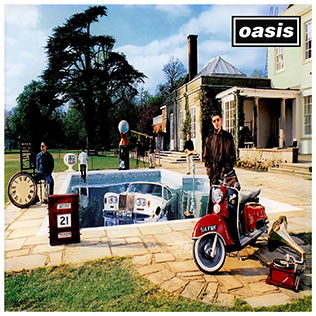

Be Here Now (1997)

Release Date: August 21, 1997
Following the immense success of "(What's the Story) Morning Glory?", "Be Here Now" was one of the most highly anticipated albums of the 1990s. It shattered sales records, becoming the fastest-selling album in UK chart history. Characterized by its opulent production, lengthy songs, and layered guitars, it was seen as Oasis embracing their superstar status.
Despite mixed critical reception upon its release, the album features fan favourites like "D'You Know What I Mean?" and "Stand by Me." Over time, its reputation has seen some re-evaluation, with many appreciating its ambitious scale and the band's sheer confidence at the height of their fame.
Track List:
- D'You Know What I Mean?
- My Big Mouth
- Magic Pie
- Stand by Me
- I Hope, I Think, I Know
- The Girl in the Dirty Shirt
- Fade In-Out
- Don't Go Away
- Be Here Now
- All Around the World
- It's Getting Better (Man!!)
- All Around the World (Reprise)